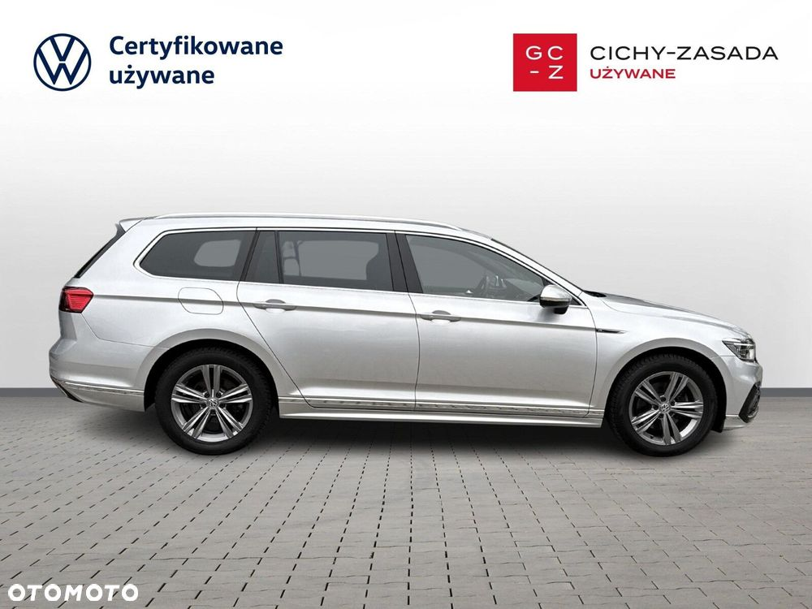

Volkswagen Passat 2.0 TSI Elegance DSG
89900 PLN
148 002 km
Grupa Cichy-Zasada to największa grupa dealerska w branży motoryzacyjnej w Polsce.
Od 30 lat jesteśmy autoryzowanym dealerem renomowanych marek motoryzacyjnych takich jak Volkswagen, Skoda, Audi, Seat, Cupra oraz Volkswagen Samochody Dostawcze.
W stałej ofercie posiadamy ponad 700 samochodów używanych.
Działamy na terenie całej Polski oferując najwyższą jakość obsługi oraz dostosowanie się do potrzeb naszych Klientów.
Dodatkowo oferujemy usługi w zakresie:
- FINANSOWANIA - kredyty, leasing i najem
- UBEZPIECZENIA – promocyjne pakiety AC/OC/NW
- ODKUP – pozostaw obecny samochodu w rozliczeniu
- PRZEGLĄDY –zakupu dodatkowej gwarancji, pakietu olejowego
Pełna oferta na stronie www.samochodyuzywane.pl
Pomożemy Ci znaleźć Twój wymarzony samochód.
Zapraszamy do kontaktu.
‼ Uwaga ‼
Miejsce ekspozycji pojazdu - Grupa Cichy-Zasada Samochody Używane Oddział w Warszawie, ul. Grochowska 163, 04-111 Warszawa
W tym ogłoszeniu prezentujemy pojazd:
VOLKSWAGEN PASSAT ESTATE
Silnik: 2.0 TSI 190 KM
Skrzynia biegów: Automatyczna
Pojazd zakupiony: Salon Holandia
Nr rej.: WW091GR
Data I rej.: 2020-07-29
VIN:WVWZZZ3CZLE134707
Wyposażenie:
-ABS,
-aktywne rozpoznawanie znaków ograniczenia prędkośc,
-aktywny asystent hamowania awaryjnego,
-aktywny asystent zmiany pasa ruchu,
-alufelgi, felgi aluminiowe 17,
-Android Auto, Apple CarPlay,
-asystent hamowania - Brake Assist,
-asystent pasa ruchu,
-asystent świateł drogowych,
-bluetooth,
-boczna poduszka powietrzna kierowcy, boczne poduszki powietrzne - przód,
-czujnik deszczu, czujnik zmierzchu,
-dostęp do internetu,
-ekran dotykowy,
-elektroniczny system rozdziału siły hamowania,
-elektryczne szyby przednie, elektryczne szyby tylne,
-elektryczny hamulec postojowy,
-fotele przednie z funkcje masażu,
-gniazdo USB,
-hak,
-Isofix (punkty mocowania fotelika dziecięcego),
-kamera parkowania tył,
-keyless entry, keyless Go,
-kierownica skórzana, kierownica sportowa, kierownica wielofunkcyjna, kierownica ze sterowaniem radia, klimatyzacja automatyczna,
-klimatyzacja automatyczna, dwustrefowa,
-kontrola odległości od poprzedzającego pojazdu,
-kontrola odległości z przodu (przy parkowaniu), kontrola odległości z tyłu (przy parkowaniu),
-kontrola trakcji,
-kurtyny powietrzne - przód,
-lampy doświetlające zakręt,
-lampy przeciwmgielne w technologii LED, lampy przednie w technologii LED, lampy tylne w technologii LED,- Lane assist - kontrola zmiany pasa ruchu,
-lusterka boczne składane elektrycznie,
-oświetlenie adaptacyjne,
-oświetlenie wnętrza LED,
-podgrzewana przednia szyba,
-podgrzewane lusterka boczne,
-podłokietniki - przód,
-podłokietniki - tył,
-przyciemniane tylne szyby,
-radio,
-regul. elektr. podparcia lędźwiowego - kierowca, regul. elektr. podparcia lędźwiowego - pasażer,
-sportowe fotele - przód,
-System nawigacji satelitarnej,
-system ostrzegający o możliwej kolizji,
-system rozpoznawania znaków drogowych,
-system Start/Stop, światła do jazdy dziennej,
-tapicerka alcantara, tapicerka częściowo skórzana,
-tempomat adaptacyjny ACC,
-wspomaganie kierownicy,
-Zestaw głośnomówiący,
-zmiana biegów w kierownicy
PRZYJMUJEMY SAMOCHODY W ROZLICZENIU
- Natychmiastowa wycena auta używanego.
- Odkup za gotówkę
Zdjęcia zawarte w ogłoszeniu mają charakter poglądowy Ogłoszenie ma charakter informacyjny nie stanowi natomiast oferty handlowej w rozumieniu art. 66 § 1 Kodeksu Cywilnego. W celu sprawdzenia zgodności oferty oraz uzyskania wszelkich informacji prosimy o kontakt z handlowcem odpowiedzialnym za ogłoszenie. Zapraszamy na jazdę testową!
*PRZED PRZYJAZDEM PROSZĘ POTWIERDZIĆ TELEFONICZNIE DOSTĘPNOŚĆ SAMOCHODU *
Godziny otwarcia: pon. – pt. 9.00 - 18.00 sob. 9.00 - 15.00
Ogłoszenie ma charakter informacyjny i stanowi zaproszenie do zawarcia umowy (art. 71 Kodeksu cywilnego); nie stanowi natomiast oferty handlowej w rozumieniu art. 66 § 1 Kodeksu cywilnego. W celu sprawdzenia zgodności oferty oraz uzyskania wszelkich informacji prosimy kontaktować się z handlowcem d.s. samochodów używanych.
